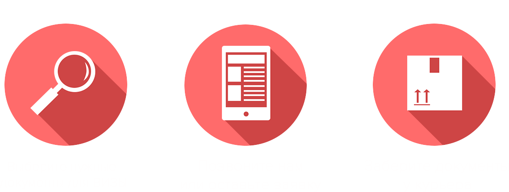

Наши Услуги

Справка с места
работы

Справка 2 НДФЛ

Выписка из банка

Подтверждение
бронирования гостиницы

Страховка для выезда
за рубеж

Билет на самолет
для визы
Документы для шенгенской Визы
С 2013 года странами–участниками Шенгена был введен единый список документов, которые понадобятся для получения визы. При этом, нужно отметить, что у каждой из стран остались свои требования, а потому, существуют незначительные различия в установленном перечне. О таких особенностях турист должен заранее узнать в посольстве или визовом центре страны, которую он собирается посетить.
Требования, касающиеся предоставления того или иного документа, должны строго выполняться, в противном случае, россиянину будет отказано в получении визы. Все справки, а также различные выписки, страховка и т. д. должны быть оформлены в соответствии с установленными правилами шенгенского соглашения.
Как и где получить документы для оформления ВИЗЫ?
Cправка с места работы
Этот документ оформляется на официальном бланке организации, где указываются следующие сведения:
- - основные справочные данные учреждения;
- - наименование должности;
- - период работы;
- - среднемесячный доход за год или за иной промежуток времени;
- - период отпуска сотрудника, который при этом должен совпадать с датой путешествия.
Документ подписывается руководителем и главным бухгалтером. На бланке ставится печать, а в левом нижнем углу указывается номер телефона и ФИО сотрудника, который может подтвердить сведения прописанные в справке.
Справка 2 НДФЛ для ВИЗЫ
Необходимость предоставления справки о доходах объясняется тем, что гражданин должен подтвердить стабильность своего заработка в России. Чем выше доходы, тем больше шансов получить визу.
Сведения о заработной плате, указанные в справке по форме 2 НДФЛ, предоставляются за полный или неполный год. Если турист оформляет визу в июне, то информацию о доходах он представляет за прошлый год и за январь–май текущего года.
Сегодня многие путешественники ищут, где приобрести справку о доходах. Такой вариант лучше не использовать, ведь в случае выявления ложных сведений, в получении визы будет отказано.Выписка из банка
Одним из главных документов, который понадобится для оформления Шенгена, является выписка из банка. В ней отражаются финансовые возможности гражданина. Представляется документ по запросу клиента. Для этого достаточно предъявить паспорт. В случае необходимости, банк может потребовать дополнительные документы, которые удостоверяют право вкладчика распоряжаться средствами. Сведения прописываются за 3 месяца.
Для каждой страны существует минимальный порог, позволяющий рассчитывать на получение шенгенской визы.
Подтверждение бронирования гостиницы для ВИЗЫ
Обязательным требованием получения Шенгена, является доказательство брони отеля на срок пребывания в странах, которые относятся к шенгенской зоне.
Каждое консульство или визовый центр предъявляют свои условия к подтверждению резервирования номера. У вас могут потребовать распечатку от отеля либо факсимильное доказательство. В некоторых случаях, гражданин предоставляет ваучер, полученный через сайт после оформления брони.
Страховка для выезда за рубеж
Для оформления шенгенской визы, в обязательном порядке, необходимо иметь действующую медицинскую страховку. Это не только обязательное требование посольства, но и возможность покрыть свои расходы, в случае, если придется обратиться за медицинской помощью.
Если турист планирует путешествие с семьей или знакомыми, допускается оформление единой страховки, но каждый участник должен быть вписан в бланке документа.
Для оформления страховки лучше обратиться в крупную и надежную компанию.
Билет на самолет для ВИЗЫ
Чтобы оформить визу для посещения стран Европы, придется позаботиться заранее о приобретении билетов. Их необходимо предоставить в посольство или визовый центр, как один из основных документов.
Будет вполне достаточно продемонстрировать копии билетов, забронировать которые можно через интернет или обратившись в авиакомпанию.
Многие туристы опасаются заранее приобретать билеты на самолет, так как Посольство может и отказать в получении визы. В этом случае, есть возможность забронировать их без предоплаты. Большинство авиакомпаний предоставляют такую услугу.
Как получить с нами документы для оформления ВИЗЫ за 1 день?
Для получения шенгенской визы самостоятельно, придется потратить немало времени и сил. Однако, собравшись в путешествие, не всегда удается выкроить свободную минутку, чтобы быстро подготовить все необходимые документы. Возникает вопрос, а можно ли как-то ускорить этот процесс?
Наша компания помогает оформить пакет документов для получения шенгенской визы всего за один день. Многолетний опыт работы, взаимодействие с официальными ведомствами, а также высококвалифицированный персонал, позволяют гарантировать качество наших услуг. Мы сделаем так, что у вас останется время на более приятные занятия.
Сделайте 3 простых шага
Наша специализация – срочный сбор документов для Шенгента за 1 день. Обратитесь в наш офис, и уже завтра мы сможем предоставить вам полный пакет документов, разрешающий пребывание в странах Европы.
От клиента требуется выбрать, что ему понадобится для оформления визы. Перечень следует уточнить в Посольстве или визовом центре. После этого, турист может позвонить специалистам нашей компании или оставить заявку на сайте.
Как только все документы будут собраны, с вами свяжется курьер и доставит бумаги прямо в руки.
Таким образом, ваше участие в решении вопроса по сборам документов для оформления Шенгена будет сведено к минимуму.
Преимущества нашей компании:
- - получение пакета документов
- - разумные цены на услуги
- - срочное решение вопроса
- - экономия личного времени
- - консультации специалистов.
Благодаря услугам нашей компании, вы сможете получить шенгенскую визу гораздо быстрее и без лишних проблем.